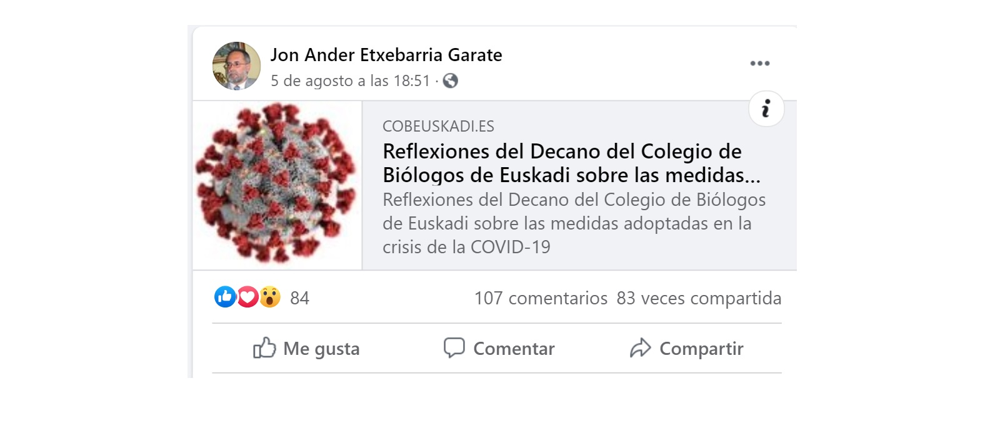

Las afirmaciones falsas del decano del Colegio de Biólogos de Euskadi sobre la COVID-19

Nos habéis preguntado por un documento en el que el decano del Colegio de Biólogos de Euskadi (COBE), Jon Ander Etxebarria Garate, analiza las medidas adoptadas en la crisis de la COVID-19.En él, afirma que las PCR dan muchos falsos positivos, que los asintomáticos no contagian o que las mascarillas causan una ligera hipoxia.No es cierto.Os contamos lo que sabemos al respecto.
El documento fue publicado en un principio en la página del Colegio de Biólogos de Euskadi.Pero ya no es de acceso libre porque el documento ha sido retirado.Se puede comprobar el contenido del mismo aquí y aquí.
El Colegio, que ha retirado el documento, ha emitido un comunicado en el que afirma que 'dicho escrito expresa única y exclusivamente la opinión personal del decano'.
'Ese documento no ha sido ni debatido, ni consensuado, ni apoyado por ningún miembro de la Junta de Gobierno del COBE, ni representa el pensar de todo el colectivo de Biólogos y Biólogas de Euskadi.Por ser una opinión estrictamente personal, no debió publicarse en la web institucional del COBE ni llevar el logo del COBE y por ello ya ha sido retirado', indica.La Junta de Gobierno analizará lo sucedido y 'se reservará la posibilidad de tomar las acciones que se consideren oportunas'.*
Etxebarria es jefe de control de calidad del agua en el Consorcio de Aguas Bilbao - Bizkaia, según su perfil de LinkedIn.Sus afirmaciones, que han sido compartidas por negacionistas, también han sido criticadas por múltiples biólogos que las califican de 'medias verdades' o 'erróneas'.En el texto no indica de dónde proviene la mayoría de los datos que utiliza.
Etxebarría cuestiona la fiabilidad de las PCR y llega a afirmar que 'se puede deducir que de todos los casos positivos que se detectan al menos el 50% son falsos positivos'.'En el momento de la desescalada no se puede utilizar como principal herramienta una técnica con tantos falsos positivos para tomar medidas de tipo socio-político de influencia directa en la economía del país', afirma.
La PCR no da muchos falsos positivos y no es inespecífica, tal y como os explicamos aquí.
José Manuel Bautista, catedrático de Biología Molecular que coordinó el laboratorio de detección COVID-19 de la Universidad Complutense de Madrid, explica que 'no es cierto que la PCR que se está utilizando ahora sea inespecífica'.
'Los cebadores para amplificar (sustancias necesarias en la reacción en que se basa las PCR) son específicos para SARS-CoV-2 (el coronavirus que causa la enfermedad) y no para otros virus.Está demostrado en muchas publicaciones.Hay otros PCR generalistas para detectar más coronavirus, pero los que se usan ahora son altamente específicos', afirma.
'Cuando haces PCR, el problema es tener falsos negativos más que tener falsos positivos.Es más probable tener falsos negativos porque extraer ADN es un poco complicado (extraerlo del paciente, llevarlo al laboratorio, procesarlo) y es posible que el ADN se degrade o algún paso falle y dé negativo porque algo falló antes', explica a
Maldita.es Benedetta Bolognesi, del Instituto de Bioingeniería IBEC de Barcelona.
Aunque los falsos positivos existen, Bolognesi afirma que 'no es probable tener falsos positivos y tampoco lo es porque detecte otros coronavirus': 'La PCR es específica.Si hay discrepancia tienes que repetir la prueba'.
El decano del Colegio de Biólogos de Euskadi sostiene que los asintomáticos no contagian.E incluso subraya que la Organización Mundial de la Salud (OMS) afirma que 'es raro que una persona asintomática transmita el virus a una persona secundaria'.Como ya os hemos explicado en
Maldita Ciencia , es falso que las personas asintomáticas no contagien el coronavirus.
A pesar de que las personas asintomáticas contagiadas de COVID-19 no tosan ni estornuden con frecuencia, hay indicios de que mantener una conversación con ellas podría producir suficientes partículas en el aire como para transmitir la infección, aunque carezcan de síntomas, según un estudio de la Universidad de California (Davis, Estados Unidos), publicado en la revista científica
Aerosol Science and Technology .¿Cómo?A través de los aerosoles: partículas lo suficientemente pequeñas como para viajar por el aire.
Sonia Zuñiga, investigadora del Centro Nacional de Biotecnología en el Consejo Superior de Investigaciones Científicas (CNB-CSIC) y cuya línea de investigación se centra en la bases moleculares de la patogénesis de coronavirus emergentes confirma a
Maldita Ciencia que estas personas transmiten el virus: 'Un paciente asintomático es una persona que está infectada pero no desarrolla síntomas clínicos de la enfermedad.Pero el problema es que puede ser infeccioso, es decir, transmitir el virus a otros'.
La OMS explica en su web que es posible contraer COVID-19 de alguien que 'no se sienta enfermo'.'Según algunas informaciones, las personas sin síntomas pueden transmitir el virus.Aún no se sabe con qué frecuencia ocurre.La OMS está estudiando las investigaciones en curso sobre esta cuestión y seguirá informando sobre las conclusiones que se vayan obteniendo', afirma.
El decano pone en duda la eficacia del confinamiento para frenar la expansión de la COVID-19.Señala que en los países en los que el confinamiento ha sido más estricto y de una mayor duración, la tasa de mortalidad por cada 100.000 habitantes ha sido mayor que en los países 'con un confinamiento más flexible, de menor duración e incluso sin confinamiento'.
Pone como ejemplo a Suecia, que optó por no imponer medidas de confinamiento frente a la pandemia.Pero en junio el epidemiólogo jefe de la Agencia de Salud Pública de Suecia y gurú de la inmunidad de rebaño Anders Tegnell lamentó no haber seguido otra estrategia, según recoge la agencia EFE.Suecia había registrado por aquel entonces 5.161 muertos, 'con una tasa de 50,30 por 100.000 habitantes, cinco veces más que Dinamarca, nueve que Finlandia y diez que Noruega'.
Además, el decano no menciona el caso de lugares como Brasil o Estados Unidos.Estos países no han tenido un confinamiento estricto y, sin embargo, están entre los 10 países del mundo con más muertes con coronavirus por cada 100.000 habitantes, según afirma RTVE tras analizar los datos del Centro de Ciencias e Ingeniería de la Universidad John Hopkins de Estados Unidos, ministerios de Sanidad oficiales y la Organización Mundial de la Salud.
El objetivo del confinamiento es limitar los contactos para frenar la cadena de contagios.Este estudio del MIT muestra los efectos que han tenido en Nueva York medidas como el cierre de colegios o la orden de quedarse en casa.El número de contactos fuera del hogar se ha reducido un 93%: de unos 75 diarios por persona a apenas cinco.
En España, tras varias semanas de confinamiento, la curva fue aplanándose y el número de contagios disminuyó.Ahora, con la progresiva vuelta a la normalidad y a medida que las personas se vuelven a reunir y se relajan las medidas de prevención están surgiendo varios rebrotes.En
Maldita Ciencia os hemos contado porque el riesgo aún no ha desaparecido y es importante no bajar la guardia.
Etxebarria afirma que no está demostrado que la mascarilla prevenga contagios y vuelve a citar a la OMS.'La OMS, en su circular de 5 de junio de 2020, no establece la obligatoriedad del uso de las mascarillas en espacios exteriores, ya que considera que no está demostrado que prevenga del contagio de la COVID-19', afirma.Además, indica que la OMS defiende que solo hay que usar mascarilla si se tiene tos o fiebre o cuando se esté con una persona enferma.
La OMS ha defendido durante meses que la población general sana no necesita utilizar mascarillas para hacer frente a la pandemia de COVID-19.
Pero en este documento publicado el 5 de junio recomienda a la población general usar mascarillas 'en situaciones y entornos específicos como parte de un enfoque integral para interrumpir la transmisión del SARS-CoV-2'.Por ejemplo, al reunirse con otras personas, en el transporte público, tiendas, centros de trabajo, escuelas, iglesias, mezquitas u otros lugares concurridos.
También los Centros de Control de Enfermedades estadounidenses recomiendan el uso generalizado de mascarillas o de otros sistemas para taparse la boca y la nariz a la población general, especialmente en lugares donde sea difícil guardar la distancia de seguridad y en regiones donde exista una alta transmisión de la enfermedad.
https://twitter.com/CDCgov/status/1246208612722192385?ref_src=twsrc%5Etfw%7Ctwcamp%5Etweetembed%7Ctwterm%5E1246208612722192385%7Ctwgr%5E=https%3A%2F%2Fmaldita.es%2Fmalditaciencia%2F2020%2F04%2F30%2Ftodos-con-mascarilla-contra-el-coronavirus-sanidad-y-oms-dicen-que-no-pero-varios-paises-y-varios-expertos-si-lo-recomiendan-o-imponen%2F
Algunos estudios también apoyan su uso generalizado, tal y como os contamos aquí.Las mascarillas, hasta las caseras, protegen aunque sea parcialmente contra el coronavirus.
'Los virus suelen estar en gotitas minúsculas de saliva, y eso puede quedar retenido por unas dos o tres capas de tela.Es poco probable que un virus atraviese todas esas capas.El ponerle barreras al virus es un sistema eficaz para protegerse y proteger a los demás, explicó a
Maldita Ciencia la jefa del grupo de Inmunología y Genómica del Instituto de Investigaciones Marinas de Vigo, centro del Consejo Superior de Investigaciones Científicas (CSIC) Beatriz Novoa.
El decano sugiere además que la mascarilla provoca una ligera hipoxia (falta de oxígeno en el organismo) y que quien la porta vuelve a inspirar el dióxido de carbono que expira y a introducirlo en sus pulmones.No hay evidencias científicas que demuestren que su uso provoque a sus portadores una carencia de oxígeno, tal y como os contamos aquí.
María Elisa Calle, experta en Epidemiología y Salud Pública y profesora de la Facultad de Medicina de la Universidad Complutense de Madrid, asegura que 'el uso de mascarillas no produce hipoxia'.Las mascarillas, según explica, no son estancas: entra aire por los laterales y la parte superior y con ese aire entra el oxígeno y se elimina el dióxido de carbono.
'Además, los tejidos utilizados dejan pasar el gas y el oxígeno es un gas.Respiramos oxígeno mezclado con nitrógeno y espiramos CO2, que también es un gas.Si fuera cierto, los cirujanos que intervienen durante varias horas, estarían muertos', afirma Calle, que además forma parte de la Asociación de mujeres investigadoras y tecnólogas (AMIT).
El decano se pregunta en el documento si la inmunidad de rebaño 'no es la mejor prevención de cara a enfrentarse con el virus'.La inmunidad de grupo o de rebaño es la protección de una determinada población ante una infección debido a la presencia de un elevado porcentaje de individuos inmunes.Os lo contamos aquí.
La hipótesis de la inmunidad de grupo asume que quienes superen la enfermedad (o al menos un porcentaje elevado) adquieren inmunidad frente al coronavirus desarrollando anticuerpos, pero como ya os explicamos no hay evidencias científicas que garanticen que los pacientes curados no puedan volver a infectarse.
Etxebarria compara la COVID-19 con la gripe.Al comparar la tasa de mortalidad de ambas enfermedades, llega a la conclusión de que si no hubiera vacuna para la gripe la tasa de mortalidad sería similar a la de esta enfermedad.No hay evidencias de que sea así.
En
Maldita Ciencia ya os hemos explicado por qué el coronavirus no es como una gripe.Según la OMS, la COVID-19 tiene más mortalidad y transmisibilidad.Además, no tiene tratamiento ni vacuna.
'La COVID-19 causa una enfermedad más grave que la gripe estacional.Mientras que muchas personas en todo el mundo han desarrollado inmunidad a las cepas de la gripe estacional, COVID-19 es un nuevo virus ante el que nadie tiene inmunidad.Eso significa que más personas son susceptibles a la infección, y algunas sufrirán una enfermedad grave', explicó el director general de la Organización Mundial de la Salud (OMS), Tedros Adhanom Ghebreyesus.
Etxebarria afirma que 'el virus por su propia inercia natural iría bajando en su letalidad como se aprecia por la relación de positivos que se tiene en la actualidad y los fallecidos, cifras que están muy alejadas de las encontradas en la época de mayo al inicio de la nueva normalidad'.
No hay evidencias de que el coronavirus se haya debilitado, tal y como os contamos en
Maldita Ciencia .Víctor Jiménez Cid, catedrático de Microbiología de la Universidad Complutense de Madrid y miembro de la Sociedad Española de Microbiología, explica que 'esta idea del ‘debilitamiento’ del coronavirus la han promovido algunos malos observadores'.
Insiste en que a día de hoy no hay evidencias científicas que respalden que el coronavirus sea ni menos transmisible ni menos virulento.'El virus no se ha debilitado', dice tajante Jiménez.
Lorenzo Armenteros, portavoz COVID-19 de la Sociedad Española de Médicos Generales y de Familia (SEMG), afirma a
Maldita Ciencia que el coronavirus sigue inalterable en la virulencia y patogenicidad respecto al original de Wuhan.'No podemos confirmar que genéticamente se haya modificado para variar su funcionalidad', sostiene.
En
Maldita Ciencia ya os hemos explicado que, aunque en España y en Europa se ha conseguido frenar la curva y reducir el número de nuevos infectados, en algunos lugares del mundo el ritmo de contagios sigue aumentando.Además, la detección de más casos asintomáticos se debe a que se realizan más pruebas y el seguimiento de contactos.
El Colegio Oficial de Biólogos de la Región de Murcia se ha desmarcado de las opiniones del decano del Colegio Oficial de Biólogos de Euskadi sobre las medidas adoptadas en la crisis de la COVID-19.'Creemos que dicho documento no responde a la realidad científica y que incurre en argumentos erróneos que podrían tener consecuencias negativas sobre la crisis social y sanitaria que vivimos', indica.
Ignacio López Goñi, catedrático de Microbiología de la Universidad de Navarra y miembro de la Sociedad Española de Microbiología, afirma en Twitter que las reflexiones del decano 'son un batiburrillo de medias verdades, errores y malas interpretaciones bastante preocupantes'.'Yo también soy biólogo y no me representa', afirma.
Además, ha sido criticado por realizar un análisis de la COVID-19 'basándose en vídeos conspiranoicos de Youtube y otras redes sociales'.
* Actualizado el 11 de agosto de 2020 con el comunicado publicado por el Colegio de Biólogos de Euskadi.
Primera fecha de publicación de este artículo: 10/08/2020.
Posted On: 2020-08-10T00:00:00
Content Date: 2020-08-10
Download Date: 2021-03-17
Document ID: L0C049792